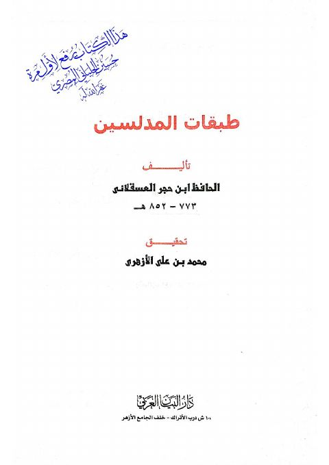

Downloads need an internet connection.
طبقات المدلسين
Authors: أحمد بن علي بن حجر العسقلاني
Editors: محمد بن علي الأزهري
Publishers: دار البيان العربي
▫️ العنوان: طبقات المدلسين ▪️ المؤلف: #أحمد_بن_علي_بن_حجر_العسقلاني ▫️ المحقق: #محمد_بن_علي_الأزهري ▪️ الناشر: #دار_البيان_العربي ▫️ تاريخ النشر: 1425هـ 2004م ▪️ بلد النشر: القاهرة، #مصر ▫️ الطبعة: 1 ▪️ عدد الأجزاء: 1 ▫️ الصفحات: 81 ▪️ نوع الوعاء: #كتاب ▫️ التصنيف الرئيسي: #الحديث_وعلومه ۪